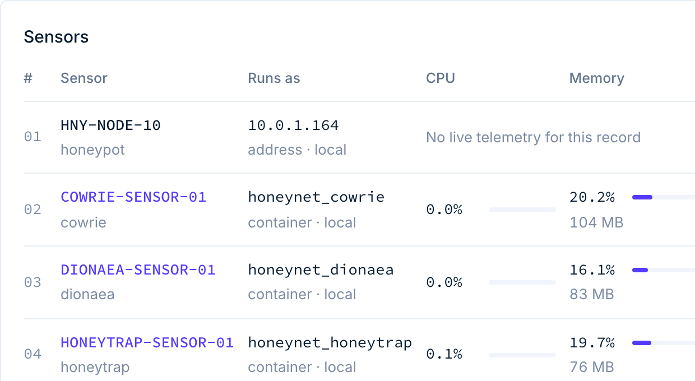

Multi-protocol honeypots
Cowrie captures SSH and Telnet sessions with a believable shell. Dionaea traps malware on SMB, FTP and MSSQL. Honeytrap listens on the leftover web ports. All three feed the same ingestion pipeline and the same session correlation.
